Part 1.1 · Convolutions from scratch
A 2D convolution slides a filter over the image and sums the products of the filter's weights and the pixels underneath. Padding is done by hand, as shown below.
def pad_zero(image, kh, kw):
top, left = kh // 2, kw // 2
bottom, right = kh - 1 - top, kw - 1 - left
padded = np.zeros((image.shape[0] + kh - 1, image.shape[1] + kw - 1), dtype=np.float64)
padded[top:top + image.shape[0], left:left + image.shape[1]] = image
return padded
def conv2d_four_loops(image, kernel):
kh, kw = kernel.shape
flipped = kernel[::-1, ::-1]
padded = pad_zero(image, kh, kw)
out = np.zeros(image.shape, dtype=np.float64)
for i in range(image.shape[0]):
for j in range(image.shape[1]):
total = 0.0
for u in range(kh):
for v in range(kw):
total += padded[i + u, j + v] * flipped[u, v]
out[i, j] = total
return out
def conv2d_two_loops(image, kernel):
kh, kw = kernel.shape
flipped = kernel[::-1, ::-1]
padded = pad_zero(image, kh, kw)
out = np.zeros(image.shape, dtype=np.float64)
for i in range(image.shape[0]):
for j in range(image.shape[1]):
out[i, j] = np.sum(padded[i:i + kh, j:j + kw] * flipped)
return outI compared both against scipy.signal.convolve2d on my photo (450×600) with a 9×9 box filter. The outputs match.
| Implementation | Time | Largest difference from SciPy |
|---|---|---|
| Four loops | 5.23 s | 2.2e-15 |
| Two loops | 0.67 s | 1.8e-15 |
| scipy.signal.convolve2d | 0.033 s |
Moving the inner two loops into NumPy makes the convolution about 8 times faster. SciPy is still about 20 times faster since its outer loops are compiled too.
For boundaries, I fill with zeros, so everything outside the photo counts as black. SciPy offers other options, like boundary="symm" (mirror) and "wrap". The cameraman sections below use "symm".
Here is the photo with the 9×9 box filter, then with Dx and Dy.
def box_filter(size):
return np.ones((size, size)) / (size * size)DX = np.array([[1.0, 0.0, -1.0]])
DY = np.array([[1.0], [0.0], [-1.0]])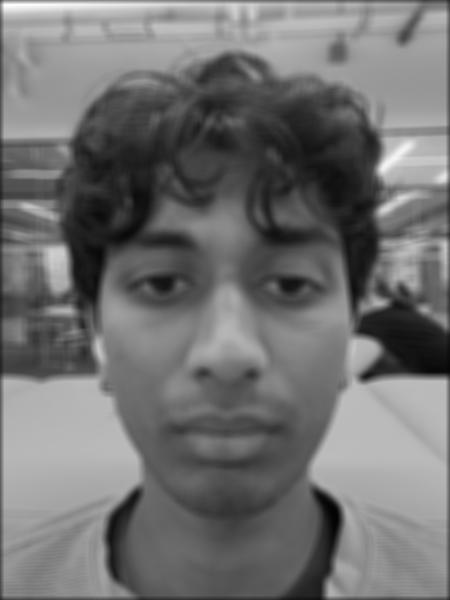
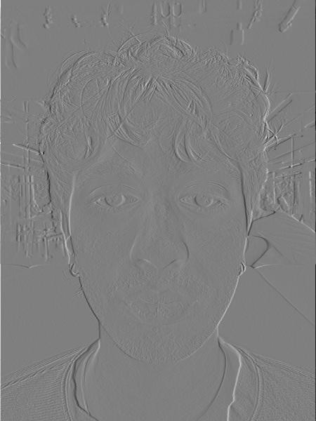
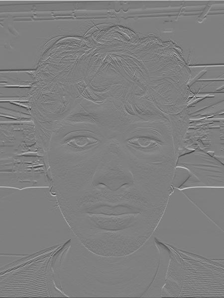
Part 1.2 · Finite difference operator
I convolved the cameraman image with Dx and Dy to get the partial derivatives. The gradient magnitude is √(dx² + dy²). I then set a threshold to turn it into an edge image.
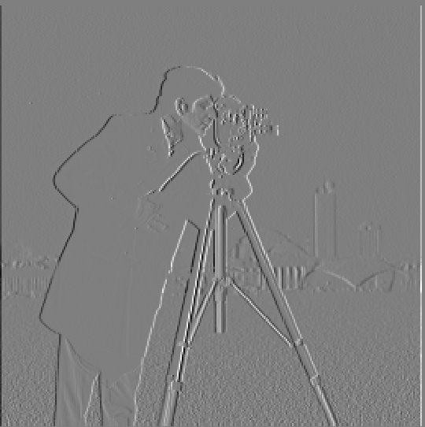
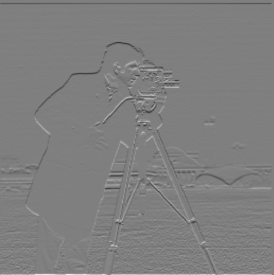
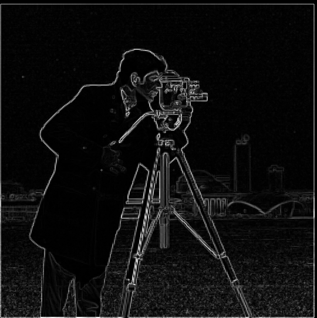
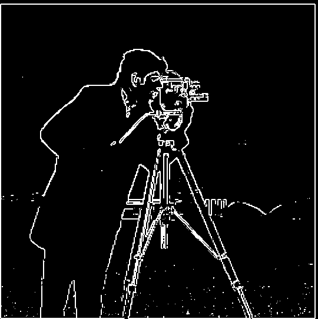
I tried thresholds from 0.15 to 0.40 and chose 0.25. Below that, the grass fills with noise. Above that, the tripod legs break up and the coat disappears. At 0.25 the man, camera and tripod are complete and a little grass noise is left. The faint buildings in the background are mostly lost.
Part 1.3 · Derivative of Gaussian filter
The finite difference is noisy, so I blur first. I made the Gaussian with cv2.getGaussianKernel (σ = 2, size 13) and took an outer product to get 2D. Then I repeated Part 1.2 on the blurred image.
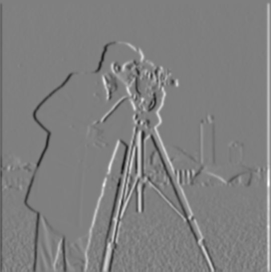
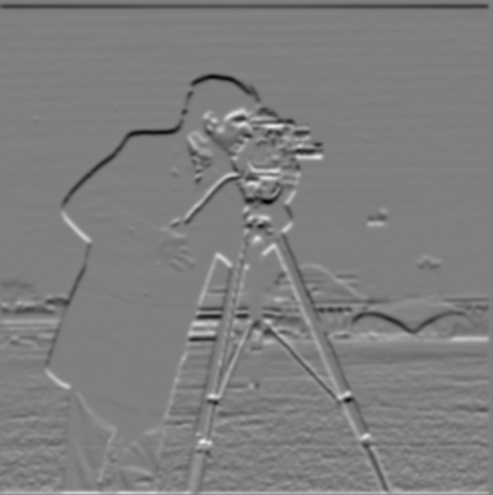


What is different? The grass noise is gone. The edges are thicker and smoother. The buildings and the horizon now show up as clean edges. The small details in the camera and face merge together. The gradient values are smaller, so I lowered the threshold to 0.06.
Next I did it with one convolution. I convolved G with Dx and Dy to get the two DoG filters, and applied them to the image directly.
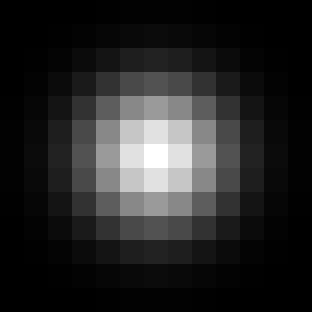
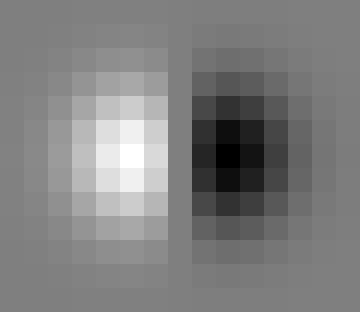
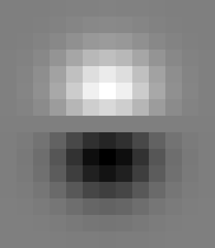


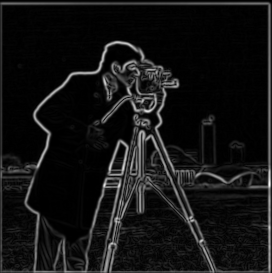
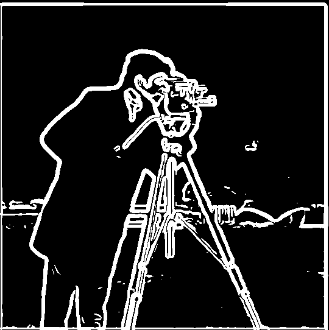
The result is the same as blurring first. The largest difference between the two gradient magnitude images is 1.6e-15, and the two edge images differ in 0 pixels.
Bells and whistles · Gradient orientation
The orientation is the angle of the vector (dx, dy) from the DoG filters. I did not use a built-in angle function. I used arctan(dy / dx), which only gives angles between −90° and 90°, and added 180° where dx is negative. Then I wrapped the result to 0° to 360°.
The angle is the hue and the gradient magnitude is the brightness, so flat areas are black. Opposite sides of an object get opposite hues, like the two sides of the coat.
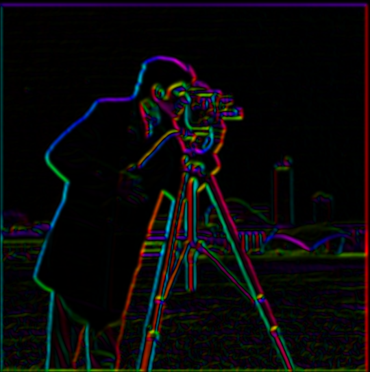
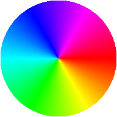
Part 2.1 · Image sharpening
A Gaussian blur keeps only the low frequencies. If you subtract the blur from the original, you get the high frequencies, which are the edges and fine texture. Adding extra high frequencies makes the image look sharper: sharpened = I + α (I − G ∗ I). This is one convolution with the filter (1 + α) δ − α G, where δ is the impulse filter and α is the amount.
Taj Mahal (σ = 2)

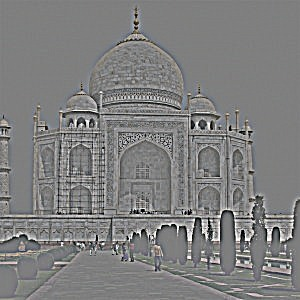
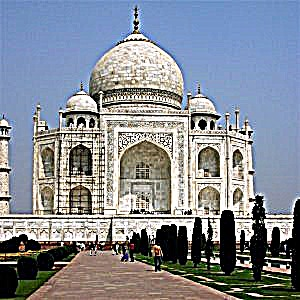
At α = 0.5 the change is small. At α = 1 and 2 the carving and the trees look clearer. At α = 4 there are halos around strong edges, like the dome against the sky, and the image looks harsh.
Doe Library (my photo, σ = 3)
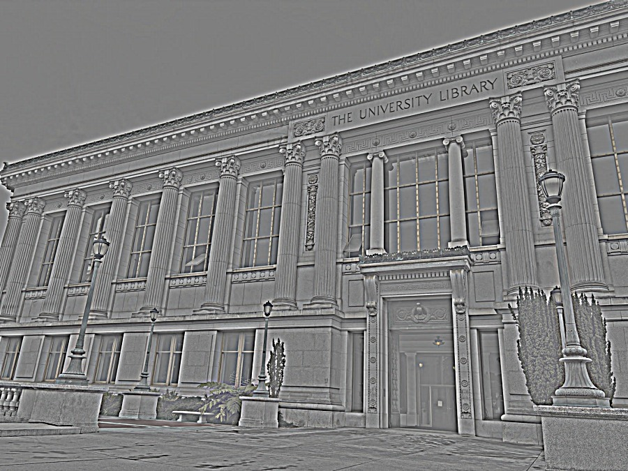
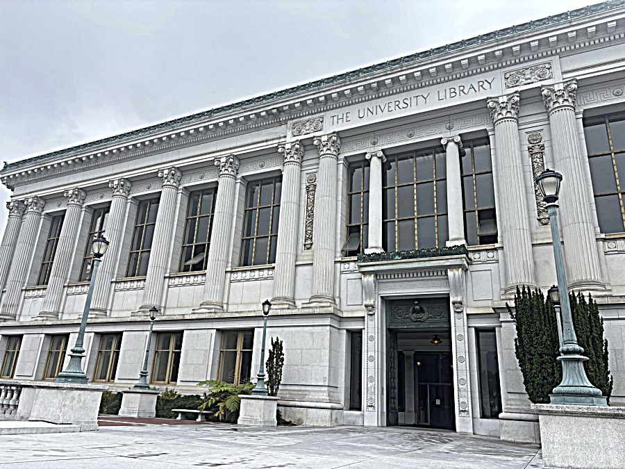
Blur a sharp image, then sharpen it. I blurred the sharp library photo (σ = 2), sharpened it again (σ = 2), and compared it to the original with PSNR. Higher PSNR means closer. The crops are enlarged 2×.
| Compared to the original | PSNR |
|---|---|
| Blurred | 26.45 dB |
| Sharpened, amount 0.5 | 27.11 dB |
| Sharpened, amount 1 | 27.67 dB |
| Sharpened, amount 1.5 | 28.08 dB |
| Sharpened, amount 2 | 28.27 dB |
| Sharpened, amount 3 | 27.96 dB |
| Sharpened, amount 4 | 26.91 dB |
| Sharpened, amount 6 | 24.21 dB |
Sharpening helps a bit. The best amount is 2, with 28.27 dB against 26.45 dB for the blurred image. The letters are readable again but still softer than the original. Blurring removes detail, and sharpening cannot bring it back. At amount 6 the score drops to 24.21 dB, which is worse than the blurred image, because the halos and noise count as errors.
Part 2.2 · Hybrid images
A hybrid image adds the low frequencies of one image to the high frequencies of another. Up close you see the high frequency image. From far away you only see the low frequency one. The low pass is a Gaussian blur. The high pass is the image minus its blur. The hybrid is the sum.
To align the images, I picked two points in each one (the eyes) and rotated, scaled and shifted each image so the points match on one canvas.
I tried σ pairs of (3, 8), (4, 12) and (6, 16), and used σhigh = 4 and σlow = 12 for every hybrid. The cutoff is where the Gaussian gain falls to one half, f = √(2 ln 2) / (2πσ). That is 0.047 cycles per pixel for the high pass and 0.016 for the low pass. On a 640 pixel wide image, that is about 30 and 10 cycles across.
Nutmeg and Derek, step by step
Nutmeg gives the high frequencies and Derek gives the low ones. The starter code does it the other way, but Derek's skin is smooth and Nutmeg's fur has strong contrast, so Derek almost disappeared.
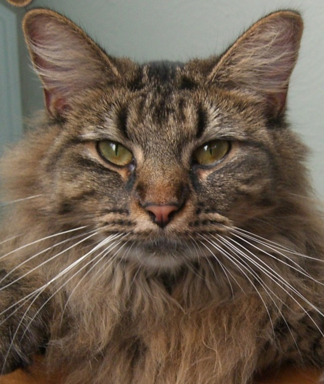
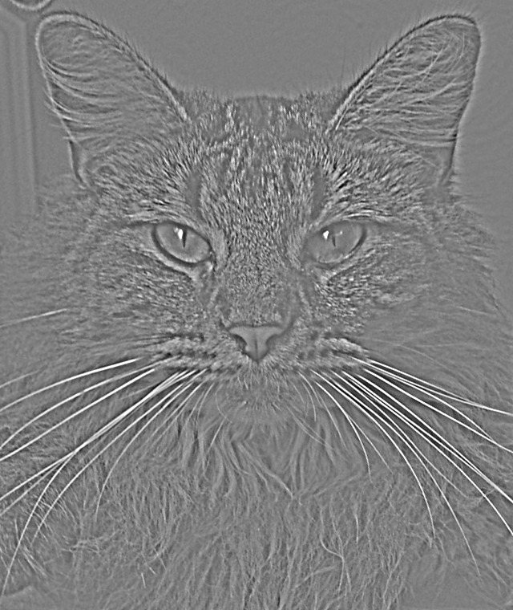

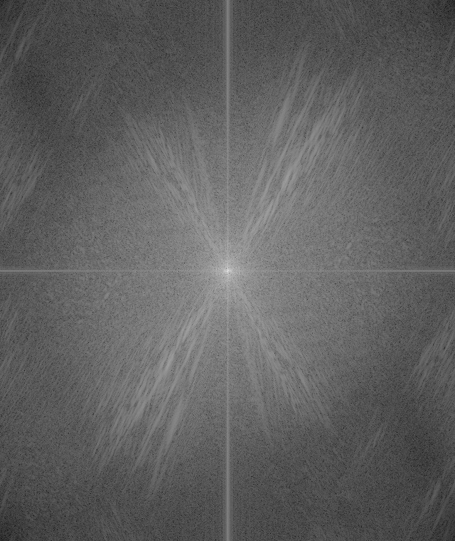
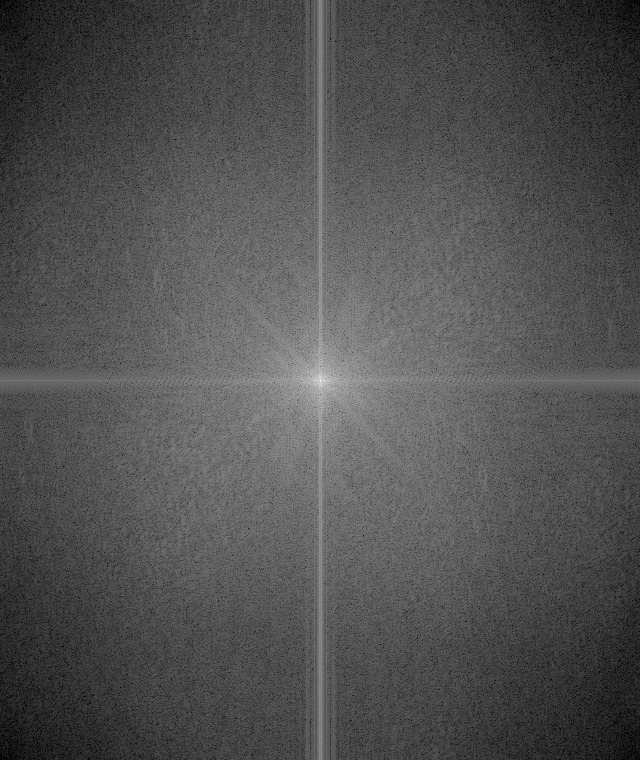
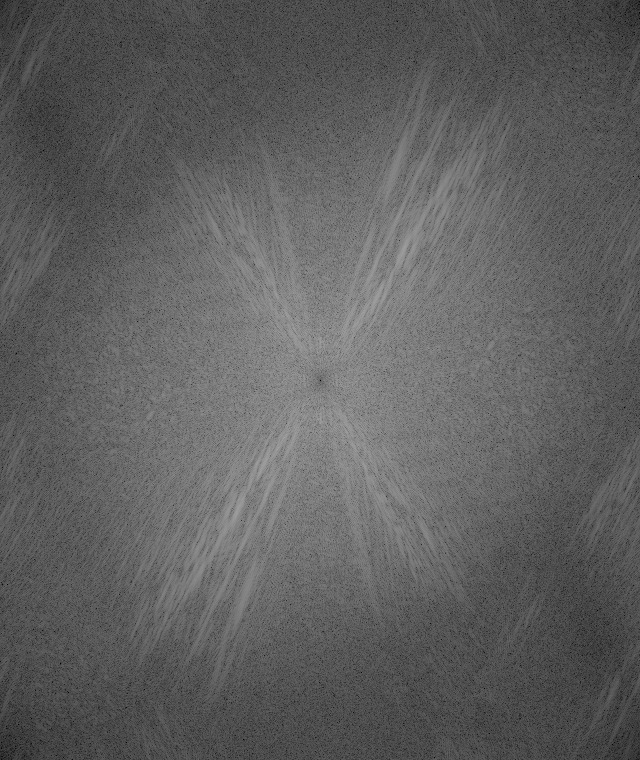
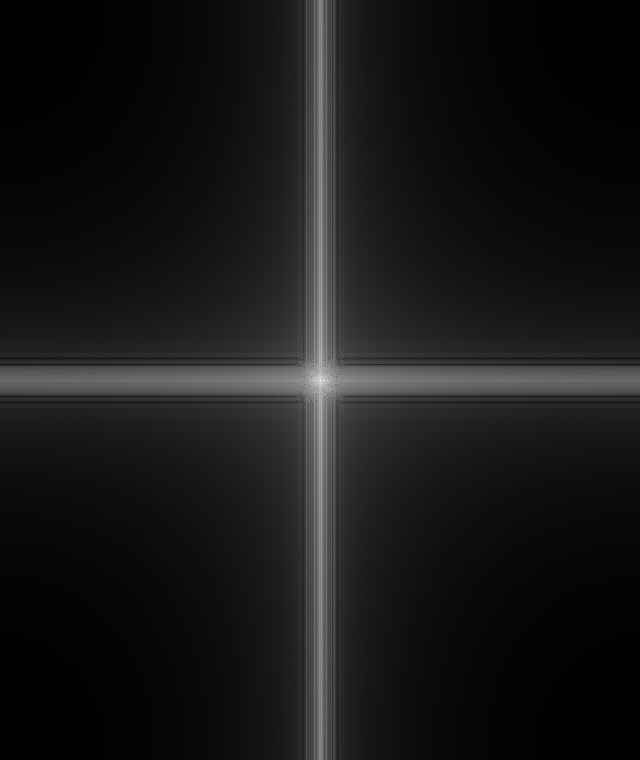
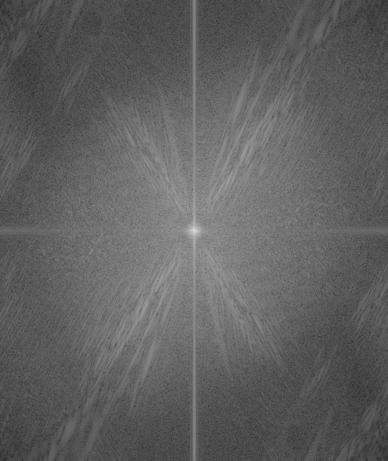
The bottom row is the log magnitude of the Fourier transform of the grayscale images. The high pass has a dark hole in the middle, since the low frequencies are gone. The low pass is only bright near the center. The hybrid has both. The bright cross comes from the image borders.
The same hybrid at 100%, 50%, 25% and 12.5% of the size:
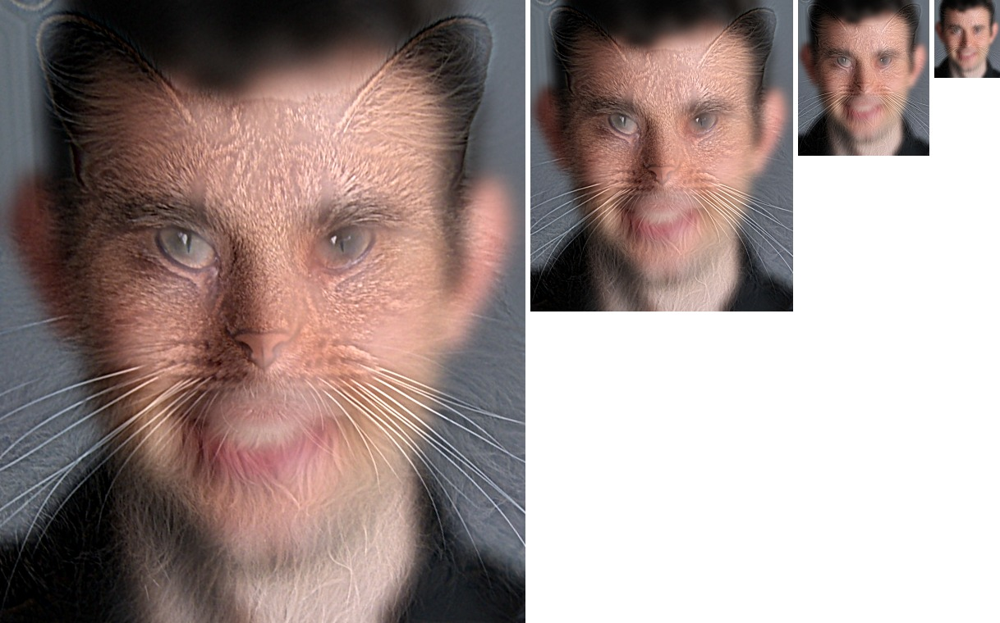
Me and the Emir of Bukhara
My selfie gives the high frequencies and the Emir (from Project 1) gives the low ones. From far away you see the beard and turban. Up close you see my face. It only partly works, because the busy background of my selfie shows up as faint lines on the turban.
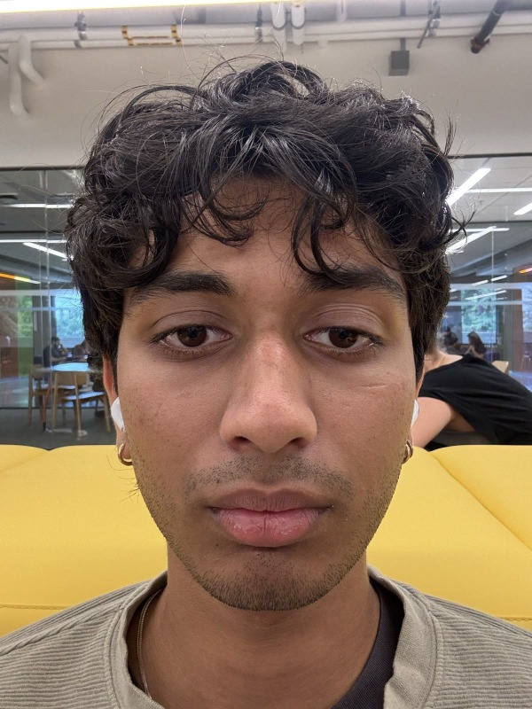
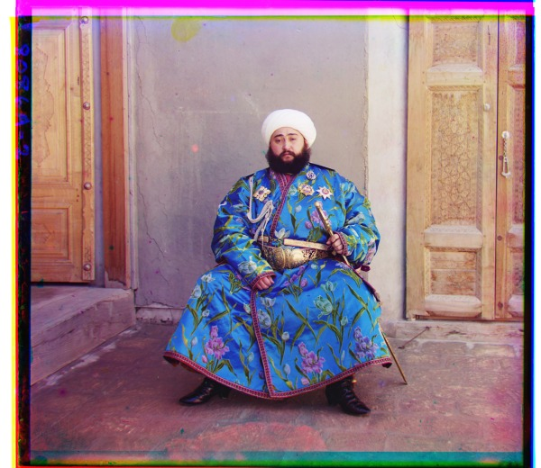
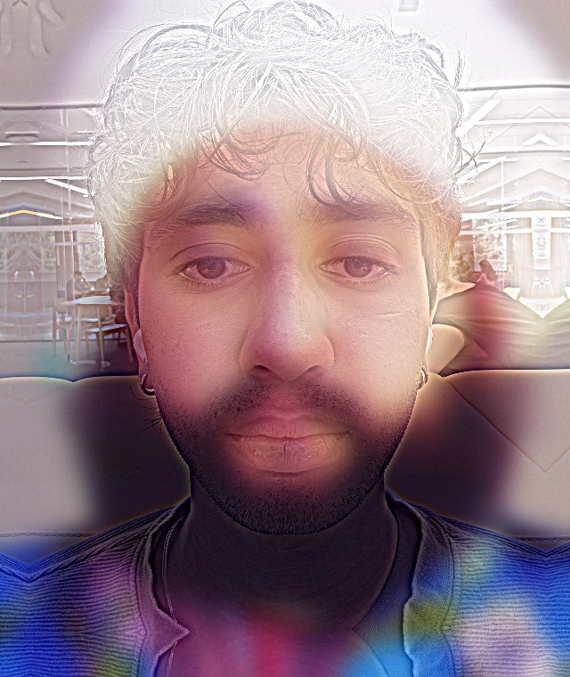
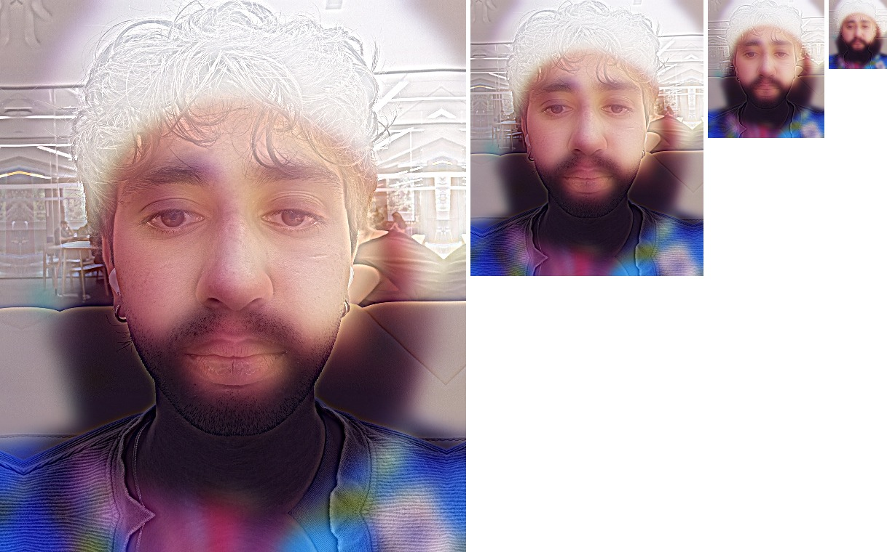
Failure: the library from two distances
I used the two library photos from Project 0, one far away with zoom and one close up. I aligned them on the words "THE UNIVERSITY LIBRARY". It fails for two reasons. It is the same building at every size, so there is no second picture to see. Also, the perspective is different, so the columns and windows show up twice. Two points can fix rotation, scale and shift, but not perspective.
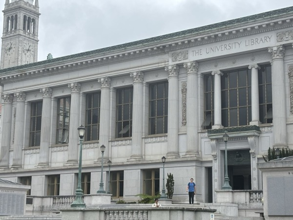
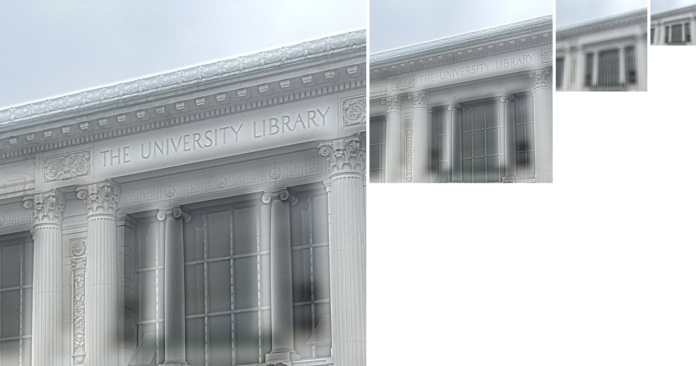
Bells and whistles: color
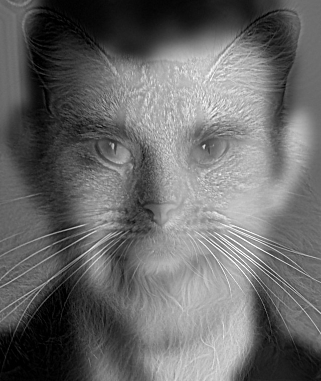
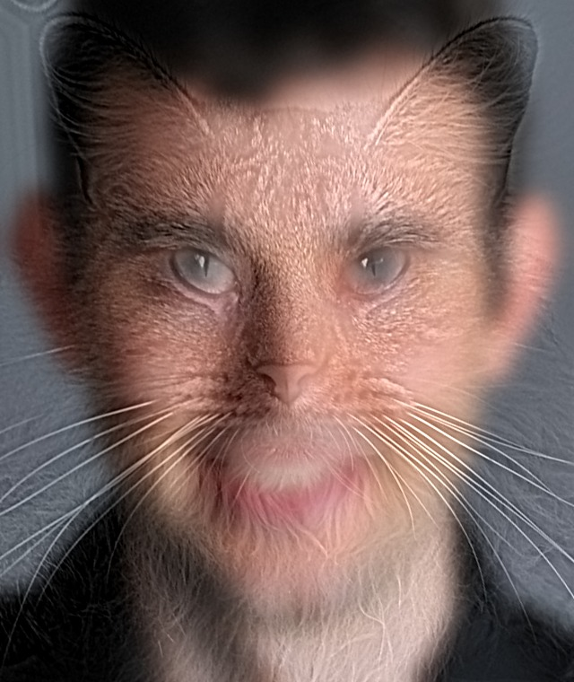
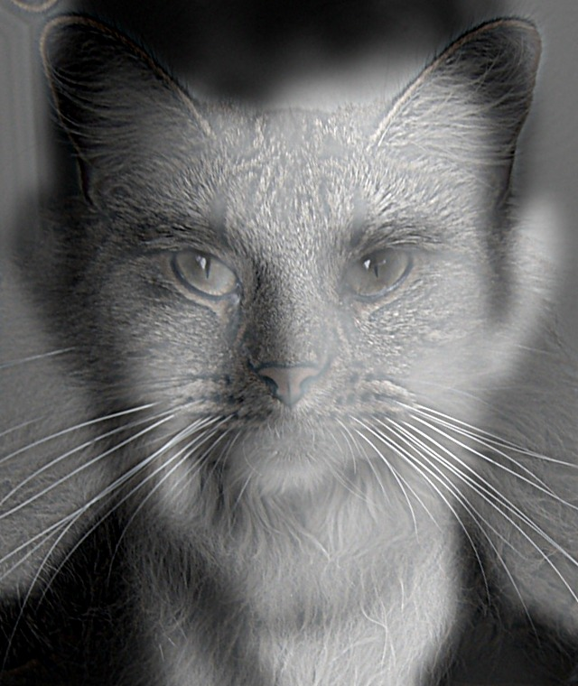
Color works best in the low frequency component. Color in the high frequency component alone looks the same as no color, and color in both looks the same as color in the low one only. The average pixel difference from the gray hybrid is 0.053 with color in the low component and 0.005 with color in the high one. The high pass image has almost no color in it, and the eye does not see color in fine detail.
Part 2.3 · Gaussian and Laplacian stacks
A stack is a pyramid without downsampling, so every level has the full size. In the Gaussian stack, level 0 is the image and level k is the image blurred with σ = 2 · 2k−1, so σ is 2, 4, 8 and 16 for levels 1 to 4. In the Laplacian stack, each level is the difference of two neighbors, Gk − Gk+1. The last level is the blurriest Gaussian, so adding all the levels gives the image back. The largest error on the apple is 1.1e-16.
Levels 0 to 4 go from left to right. Band pass levels are stretched so gray means zero, each level on its own.
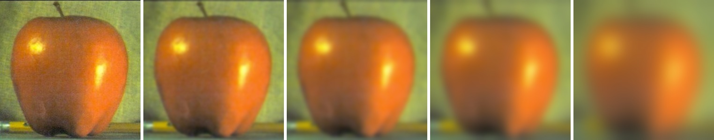
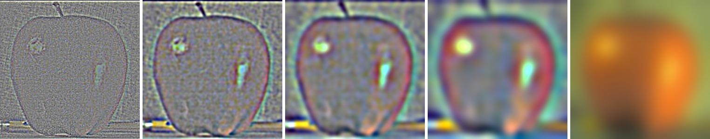
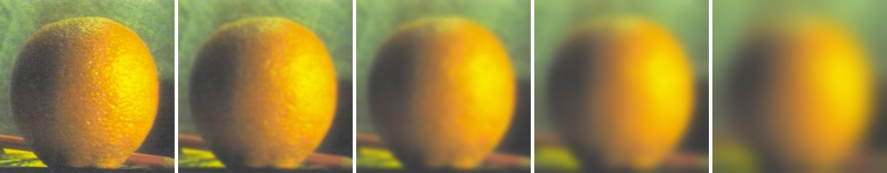
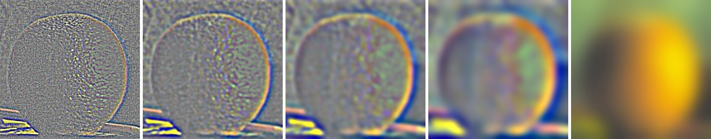
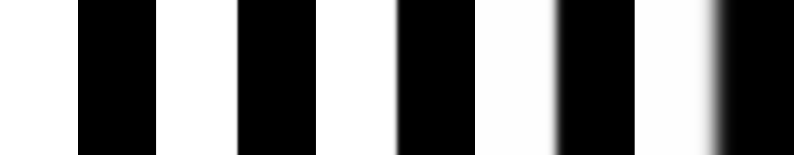
Part 2.4 · Multiresolution blending
At each level I take Mk Lk(A) + (1 − Mk) Lk(B), where Mk is the level of the mask's Gaussian stack, and then add up all the levels. The mask gets blurrier at each level, so fine detail switches from A to B over a few pixels and coarse colors switch over many. Each color channel is blended on its own.
The oraple
The mask is 1 on the left half, with five levels. The color version is my bells and whistles. It is more convincing than gray, because the two fruits mostly differ in hue.
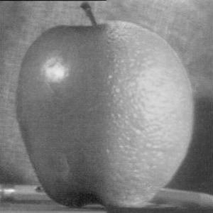
Figure 3.42 recreated. The rows are level 0, level 2 and the last level. The columns are the apple times its mask, the orange times its mask, and the sum. The bottom row adds up all the levels.
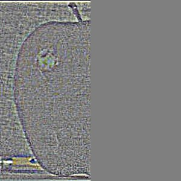
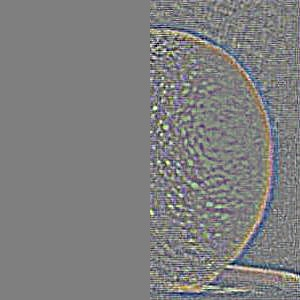
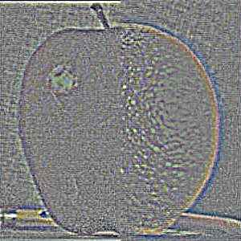
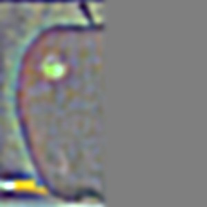
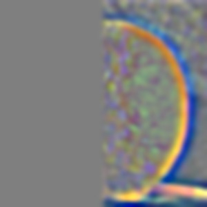
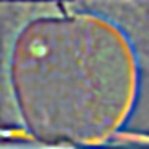
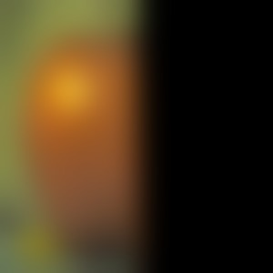
A dock that leads to a church
This is a horizontal seam. The top is the lake and church from one Prokudin-Gorskii photo, and the bottom is the dock from another. The mask is 1 above 62% of the height. At 55% a boat from the dock photo showed at the left edge.
My face on the Emir, with an irregular mask
I aligned my selfie to the Emir by the eyes. The mask is an ellipse around the face. My first, bigger ellipse pulled the yellow couch from my selfie into the beard, so I made it smaller. Below the blend is the Laplacian stack of this result, in the layout of Figure 10 in the paper. The rows are level 0, level 2 and the last of six levels.
What I learned
A hybrid or a blended image is all about the frequencies, not the individual pixels in the image. If you split an image into separate bands and treat each band as its own, then one picture can morph into another at a further distance.